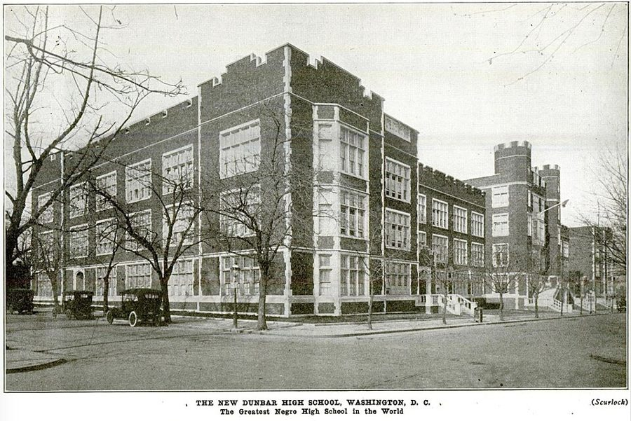

这一页在做什么
七十到七十二岁，挂名在胡佛研究所，人在家里写书、写专栏。回忆录刚出版，第一封信就是哈莱姆的外甥女读完前四章写来的。这一页的信分两路：答复素不相识的读者和学者，口气很冲；和外甥女、和 Walter Williams 几位老朋友说年纪、说旧事。
读的时候留意他几次拿自己的早年当论据，以及信从传真变成了电邮。
2000 2001 2002 2003
在家写书、写专栏，挂名胡佛研究所
9·11
Ruthellen 助手 Na 读者 Norman Ms. Oster Walter Shelby Greg
本站示意图。一个圆点是一封信，按信上的日期画；实心是他写出去的，空心是别人写来的。2000 年和 2001 年各只有两三封，2002 年一年占了大半。最后一封是 2003 年 1 月初的电邮，书把它放在这里，是因为它接着 2002 年的话头。
这个十年没有开场的串场文字，第一句就是回忆录出版。从 2002 年 2 月起，多数信成了电邮：没有日期行，开头是一行 Date: ，带着星期和钟点，有的连称呼也没有。
收信人和提到的人
十一组人。写来的信有三封：外甥女一封，Walter 两封。读者的名字都换成了星号，本站不猜。
Ruthellen 外甥女 · 写来一封，他回过两封 他在哈莱姆长大的那个家的下一代，后来住进同一套公寓，养他的那位 Mom 是她的外祖母。回忆录里拼作 Ruth Ellen。写给她的信最家常：身体、旧歌、旧事。
Na 研究助手 · 称呼在图片里 帮他订书、查资料的助手。这一封是传真，信头做成了图片，只有 Na 和 Tom 两个名字。Na 说马来西亚那边办事慢，他接着话头说下去。
Mr. ***** 等 隐去姓名的读者 · 共七封 五位读者、一位教授，另有一封电邮没有称呼。多数是读了专栏来信的陌生人。对劝他参选的那位他开玩笑，对那位教授他道谢，其余几封是反驳。
Norman Norman Podhoretz · 《Commentary》杂志的前主编 住在东部的朋友。9·11 之后他发电邮问平安，第二天写了这封信。信里的 Midge 是 Norman 的妻子、作家 Midge Decter，她刚寄来自己的新书。
Ms. Oster 英国的一位学者 · 书里只给了姓 串场文字只说是 an academic in England。他随信寄了一本书，叫对方翻到第 43 页看数字。
Walter Walter Williams · 经济学家 · 写来两封，他写去五封 三十年的朋友，这一页通信最多的人。两人互相递话头：他看了什么节目、听说了哪个学生，另一位就接着发挥。还互相拿年纪打趣。
Shelby Shelby Steele · 作家 到他家里看过他拍的照片，还要了两张挂在自己家。信里的 Rita 书里没有介绍。这封信的后一半在推荐一本书。
Greg Greg Lindsay · 在澳大利亚办智库的朋友 只有一段：他上周在专栏里预言的事，这周就应验了。
Norton 只被提到 · 哈佛时的室友 就是 60 年代那些信的收信人 Nort。他翻旧文件翻出了两人的通信，向外甥女讲起 Norton 当年的一句重话。
Cal Thomas、Rush Limbaugh 只被提到 · 专栏作家和电台主持人 都是保守派的名人。报纸把 Cal Thomas 的专栏安上了他的名字和照片；一位读者来信，以为他批评了 Rush Limbaugh。
John McWhorter 只被提到 · 语言学者、作家 串场文字说他是 a young black writer，是少数说中要害的人之一。最后一封电邮里只写 McWhorter。
Walter Williams，2013 年在 Texas Tech 大学演讲，比这一页的电邮晚十年。他生于 1936 年，比作者小六岁，所以那句 young 有来历。Free Market Institute at Texas Tech University，CC BY 3.0，维基共享资源 这一页有两个 Mary。 讲吉隆坡的旅馆、讲两人日子过得清静的 Mary and I ，是妻子 Mary。2002 年 10 月信里担心他骑车的 Mary Frances ，是住在华盛顿的亲姐姐。
Ruthellen 不是 Ruth。 回忆录里的 Ruth 是 Birdie 的姐妹，他小时候家里挣钱的那一位。Ruthellen 是下一代，Jimmy 的妹妹。信里的 504 是那栋楼的门牌，不是房间号。
信件地图
一条是一封信。斜体字是那封信正文开头的几个词，照这一版屏幕上的字抄的，在 Kindle 里搜它就能跳过去。编号是黄底的，是别人写来的信；这一页有三封。电邮的日期取自 Date: 那一行。「留意」只给方向，答案在信里。
The hook arrived yesterday and 2000 年 9 月 6 日 · Ruthellen 写来 留意：hook 是 book 的错字。她为什么写信而不打电话；最后一句学的是谁的写法。You are quite right about the 2000 年 6 月 7 日 · 传真给助手 Na 留意：日期比上一封早。他把「慢」归到谁身上，最后一句冲着谁去。As for my running for public 2000 年 6 月 27 日 · 写给一位读者 留意：全信两句。他请对方帮的「更大的忙」是什么。As far as I am concerned 2001 年 5 月 13 日 · 写给一位读者 留意：他把两个学会叫作什么；他想让执法部门记哪一本账。Midge's book got me through the 2001 年 9 月 12 日 · 写给 Norman 留意：他挑了官方声明里的哪两个词；他怕华府把这件事当成什么来办。It is heartening to know that 2001 年 12 月 18 日 · 写给一位教授 留意：两个比方，一个打仗的，一个莎士比亚的。加引号的 friends 要反着读。Good to hear from you and 2001 年 12 月 20 日 · 写给 Ruthellen 留意：银行里的一首歌把他带回哪一年；他由此怀疑起哪一行。The idea that the United States 2002 年 1 月 8 日 · 写给一位读者 留意：一句话，两条编号的理由。对方原来的主张要从这一句倒推。On this side of the Atlantic 2002 年 1 月 25 日 · 写给 Ms. Oster 留意：三代学生各由谁教。他把自己放在第几代。Last week I was watching a 2002 年 2 月 16 日 · Walter 的电邮 留意：Walter 在老影像里没看到哪三样东西；他最后的问句问的是谁。I am afraid that there are 2002 年 2 月 17 日 · 回 Walter 的电邮 留意：他把说这些话的人分成两层。那首诗在图片里，信后的串场是 2007 年补的。Since the last time you were 2002 年 3 月 31 日 · 给 Shelby 的电邮 留意：前半说照片，后半说一本讲英国的书。他拿英国的哪种人比美国的哪种人。Tom: I hope you're still doing 2002 年 4 月 1 日 · Walter 的电邮 留意：Walter 要的不是祝贺，是什么。First of all, you young whippersnappers 2002 年 4 月 1 日 · 当天回 Walter 留意：上山和下山，哪个让他拄了拐。结尾引的是一句俗话。I have NEVER criticized Rush Limbaugh. 2002 年 5 月 5 日 · 回一位读者的电邮 留意：先读信前那段串场，才知道他猜是哪里出了错。I have been riled up lately 2002 年 5 月 30 日 · 给 Walter 的电邮 留意：那栋房子多大、哪年盖的、要价多少；他把账算在谁头上。I never cease to be amazed 2002 年 7 月 22 日 · 写给一位读者 留意：他要对方分开哪两种问题；宪法里有哪个说法、没有哪个说法。Contrary to a popular view that 2002 年 8 月 14 日 · 写给一位读者 留意：第一段讲道理，拿汽车做例子；第二段换了口气，问句是冲着对方本人的。Hope things are going well with 2002 年 10 月 6 日 · 写给 Ruthellen 留意：Norton 那句话，他当时自以为在干什么；最后一句把旧事拉到今天。The young lady from Princeton whom 2002 年 10 月 21 日 · 写给 Walter 留意：他说真正可悲的不是她听了哪一边。第二段怪的是谁。Last week I did three columns 2002 年 12 月 6 日 · 给 Greg 的电邮 留意：上周预言，这周应验。信后的串场把它接回 7 月那封信的话题。As a triumph of hope over 2003 年 1 月 4 日 · 给 Walter 的电邮 留意：他说自己还剩多少指望；信后的串场是 2007 年写的，已经知道判决结果。
背景：作者默认你知道的事
9·11 的第二天
布鲁克林大桥后面的世界贸易中心双塔，袭击之前拍的。Carol M. Highsmith，公有领域，维基共享资源
2001 年 9 月 11 日，劫机者驾客机撞毁纽约世贸中心双塔，另一架撞进五角大楼。主谋是 bin Laden。信写在第二天，他人在加州。Colin Powell 当时是国务卿。
land for peace （以土地换和平）是阿以和谈几十年的公式，由以色列交还占领的土地。他把它安到 bin Laden 头上，是说反话。
Dunbar 高中和那首诗

华盛顿的 Dunbar High School 新楼，落成后不久刊出的照片。作者不详，公有领域，维基共享资源 华盛顿的黑人公立高中，1870 年创办，1916 年迁入新楼，改用诗人 Paul Laurence Dunbar（1872–1906）的名字。Walter 提到的 Armstrong 是同城另一所黑人高中。
他 1970 年代研究过这所学校，Odyssey 第 9 章讲过。去那一页 →
信里说诗写于 1916 年；诗人那时已去世十年，这首诗 1893 年就印在他的第一本诗集 Oak and Ivy 里。
「榜样论」
role models 的说法是：少数族裔的学生要有同族裔的老师做榜样才学得好，学校因此该按族裔聘人。这在英美的教育界很流行。他给 Ms. Oster 的回答只有一个例子，是纽约的三代学生。
老师 学生
19 世纪
新教徒美国人
爱尔兰天主教移民的孩子
教
稍后
爱尔兰天主教徒
犹太移民的孩子
教
1940 年代
犹太人
哈莱姆的黑人孩子
教
虚线：上一代的学生，成了下一代的老师
本站示意图，照他信里的说法画的。三代学生的老师都不是「自己人」。第三行里有他本人。信里接着说，这些黑人孩子的成绩和下东区工人家庭的白人孩子一样；依据是他随信寄的那本书，书名信里没写。
学券案和「设立国教」
学券（voucher）是政府发给家长的学费凭证，可以拿去交私立学校的学费，包括教会学校。2002 年 6 月 27 日，最高法院在 Zelman v. Simmons-Harris 案里以五比四判克利夫兰的学券计划不违宪。7 月那封信写在判决之后不到一个月。
宪法第一修正案的原话是国会不得立法 respecting an establishment of religion 。「政教分离之墙」出自 Jefferson 1802 年的一封信，不是宪法条文。他的论点建在这个区别上；反对的一方认为这条禁令管得比「不立国教」宽。
一份枪支研究和第九巡回法院
信里没写名字。本站核实：Emory 大学的历史学者 Michael Bellesiles 2000 年出版 Arming America ，说早期美国人拥枪并不普遍；书里的数据被查出问题，他 2002 年 10 月辞职。
12 月 5 日，第九巡回上诉法院在 Silveira v. Lockyer 案的判词里引了他。这条引文次年 1 月从判词里删掉了。
Bakke 之后二十五年
1978 年的 Bakke 案，Odyssey 伴读讲过：最高法院判硬性的种族配额违法，又说招生可以把种族当作一个因素。2003 年 6 月，Grutter v. Bollinger 案以五比四维持了密歇根大学法学院考虑种族的招生办法。
他 1 月的电邮写在判决之前，信后的串场写在之后。支持这类招生的一方的理由是学生群体多元对教育有益；他的理由见最后一封电邮。
Odyssey 里讲过这一段
这一页的信都写在回忆录出版以后，回忆录里没有这几年；家人和读者读后的反应，自然也只有这里有。但信里一再回头说旧事，下面四件回忆录讲过。
145 街 504 号的那套公寓 Odyssey 第 2 章（下） 回忆录讲他十几岁时被挪到公寓最里面的小房间，后来离家。信里是下一代的事：同一间屋后来住的是 Jimmy，Ruthellen 和他一样往街对面的图书馆躲。回忆录第 9 章提过她一句，说她已经长大成人。
去那一页 → 1948 年底被裁 Odyssey 第 3 章 回忆录写的是那一刻：从厂房的窗口往下看，圣诞的装饰还在，下着雪。信里是五十三年后在银行听见一首圣诞歌想起那时候，多了一个对比（当年的房间和现在的浴室），还引出他对心理治疗的一个怀疑。
去那一页 → Norton 的那句话 Odyssey 第 5 章（下） 同一句话，两本书几乎一字不差。回忆录接着写期中成绩和舍监的谈话。信里多出来的是最后一句：他认为今天处境相似的黑人学生听不到这样的话了。
去那一页 → 吉隆坡和新加坡 Odyssey 第 11 章（下） 回忆录说他和 Mary 在 1984 年、1987 年两次环球旅行，只细写了 1987 年：先新加坡，后吉隆坡，写的是一位康奈尔的旧学生送花、请吃饭。传真里是第一次去吉隆坡，下一站才是新加坡，写的是旅馆餐厅上菜的快慢。是不是同一趟，书里没说。
去那一页 →
这一版的错字
只收会让人读不懂、或者在 Kindle 里搜不到的。第一格是屏幕上的字，照抄的；第二格是本站有把握的原字。问号前多出来的撇号全书都有，见「开读之前」，这里不列。
屏幕上的字 应为 在哪 A Persona/ Od vsew A Personal Odyssey 这个十年的第一句。搜回忆录的书名搜不到这里 The hook arrived yesterday The book arrived yesterday Ruthellen 来信的第一句。book 认成 hook，这一页有好几处，连 books 也成了 hooks caused inc to comment caused me to comment 传真前面的串场 public otIice sometimes public office—sometimes 劝他参选那封信前面的串场。破折号也丢了 September 1 I th September 11th 给 Norman 的信前面的串场。搜 September 11 搜不到 World War 11 World War II 2001 年 12 月给教授的信。罗马数字认成了十一 lago was a friend Iago was a friend 同一封信。大写的 I 认成了小写的 l my niece in I larlem my niece in Harlem 2001 年 12 月给 Ruthellen 的信前面的串场。句首还掉了一个 I obviously uninfurrmed people obviously uninformed people 2002 年 1 月给读者的信前面的串场 broke through those harriers broke through those barriers Dunbar 那首诗后面的串场。同一段里 High 成了 Iligh the first black tcderal judge the first black federal judge 同一段 It really bums me up It really burns me up 2002 年 5 月给 Walter 的电邮。rn 认成了 m，意思全变了 going through old tiles going through old files 2002 年 10 月给 Ruthellen 的信 on the Stantbrd payroll on the Stanford payroll 2002 年 10 月给 Walter 的信前面的串场 Gutter v. Bollinger Grutter v. Bollinger 最后一段串场。前一段串场里拼对了
两处图片。 2000 年 6 月 7 日那封的信头是图片，只有三行：传真给 Na，发自 Tom。2002 年 2 月回 Walter 的电邮里，It said: 后面本该是诗，这一版是两张图片：Dunbar 的 Keep A-Pluggin’ Away 里的两节，各五行，用方言写成，大意是别泄气，一直干下去。这一页没有做成图片的脚注。
词与短语
按信的顺序排，串场文字里的词条归到它后面那封信的组里。斜体小字是那句话里的几个词，照这一版屏幕上的字抄的（撇号是直的），在 Kindle 里搜它就能跳到那一句。单个的生词长按就能查，这里收的主要是词典帮不上忙的。
2000 年 9 月 · Ruthellen 写来
the aunt who had raised me
… the aunt who had raised me, who …
把我养大的那位姨
就是回忆录里的 Mom，收养他的那位长辈。后半句说她是 Ruthellen 的外祖母。
from the acknowledgment on
… read from the acknowledgment on. I …
从致谢那一页起
on 是 onward：从那儿往后一直。acknowledgment 是书前的致谢。
a simpering mess
… I'd become a simpering mess, once …
哭哭笑笑、不成样子
mess 说人，是情绪收拾不住的样子。她怕一听见他的声音就说不成话，所以先写信。
when things became ugly
… when things became ugly in 504. …
家里闹得难看的时候
ugly 说局面，是吵得凶。504 是那栋楼的门牌，一家人拿它指那个家。
off the kitchen
… small room off the kitchen was my …
紧挨着厨房、从厨房进去的
off 说房间，是从某处岔出去。
fire escape
… make use of the fire escape day …
楼外的防火梯
纽约老公寓外墙上的铁梯。往轻里说：她哥哥拿它当门进出。
2000 年 6 月 · 传真给助手 Na
largess
… part of some government largess to …
（政府的）慷慨赠予
带挖苦：拿公家的钱做人情。
sons of the soil
… largess to the “sons of the soil.” Does …
「土地之子」
马来语 bumiputera 的英译，指马来人等原住民。马来西亚从 1970 年代起在入学、公职、企业股权上优待他们。引号表示这是官方的叫法。
an almost equal shock
… It was an almost equal shock to …
几乎同样让人吃惊
正话反说。让他吃惊的是菜上得快，而且居然没上错。
esoteric theories
… without getting into esoteric theories about …
玄而又玄的理论
指用「剥削」解释族群收入差距的说法。他不认这类说法；信里拿来对照的只有餐厅上菜这一个例子。
2000 年 6 月 · 给劝他参选的读者
run for public office
… urges me to run for public …
竞选公职
run 是参选。office 是职位，不是办公室。
have my sanity tested
… authorities to have my sanity tested. …
请人给我做精神鉴定
自嘲式的拒绝：我要是真宣布参选，那一定是疯了。
2001 年 5 月 · 给一位读者（心理学）
faithbased organizations
… Psychiatric Association are faithbased organizations. There …
靠信仰立足的组织
应是 faith-based，连字符丢了。2001 年的时髦词：布什政府刚提出让教会团体承办社会服务。他拿来说两个专业学会，意思是它们只凭信，不凭验证。
What baffles me
… What baffles me is why law …
我想不通的是
他爱用的句式：先说自己不解，后面跟的其实是批评。
on their say-so
… criminals released on their say-so have …
凭他们一句话
say-so 是没有别的依据、只因为某人这么说。
2001 年 9 月 · 给 Norman
back east
… friends and family back east to make …
东部那边
住在西海岸的人说东海岸。back 是因为他是从那边来的。
get someone through the day
… Midge's book got me through the …
帮人熬过这一天
不是说书读完了。那天他关了电视，靠读这本书撑过去。
inanities
… myself to the inanities of the media, …
蠢话
subject myself to 是让自己去受那份罪。
land for peace
… should offer bin Laden land for peace. …
以土地换和平
见背景。反话：但愿没人蠢到提这个。
community service
… so many hours of community service. …
社区服务
美国法院对轻罪的判罚：扫街、做义工若干小时。拿它配 bin Laden，是挖苦把这件事当官司办的思路。
an outrage
… Pearl harbor was an outrage. Maybe …
令人愤慨的暴行
和 tragedy 对着用。见「值得停下来的句子」。
semantic quibbles
… these are just semantic quibbles but …
抠字眼
先退半步，but 后面才是正题。
betray a mindset
… the official statements betray a mindset in …
露出了一种心态
betray 这里是无意中暴露，不是背叛。
2001 年 12 月 · 给一位教授
canting
… in this corrupt and canting age. …
满口漂亮话的
cant 是言不由衷的道德套话。
affirmative grading
… has called “affirmative grading” is part …
照顾性给分
仿 affirmative action （平权措施）造的词：因为学生的族裔而把分数打高。他说出自哈佛的社会学家 David Riesman。
green troops
… to be slaughtered, as green American troops …
没打过仗的新兵
green 是生手。Kasserine Pass 在突尼斯，1943 年 2 月美军在那里头一回和德军大规模交手，败得很惨。
feeding his paranoia
… friend to Othello by feeding his paranoia. …
助长他的猜疑
莎士比亚《奥赛罗》：Iago 装作朋友，一步步让 Othello 相信妻子不忠。所以信里的 friends 带引号。
2001 年 12 月 · 给 Ruthellen
on the mend
… your health is on the mend.... …
在好转
mend 是修补。只用来说病和伤。
push things
… I remember not to push things. A …
逞强
把事情往极限上推。下一句就是逞强的结果：拄了一个周末的拐。
shrinks
… reinforced my suspicion that shrinks who …
心理医生
口语，不大恭敬，来自 headshrinker。
dredge up the past
… who have people dredge up the past are …
把陈年旧事翻出来
dredge 是从河底挖淤泥。have people do 是让人去做。
not doing all of them some good
… not doing all of them some good. …
未必对每个人都有好处
往轻里说。实际意思是对其中一些人有害。
The Lone Ranger
… to be played on “The Lone Ranger,” in …
《独行侠》
1930 年代开播的广播剧，西部故事，开场曲是罗西尼的《威廉·退尔》序曲。他 1939 年到纽约，家里头一回有收音机。
the syndicate
… in bundles from the syndicate that sells …
专栏的辛迪加
不是犯罪集团。代专栏作家把同一篇文章卖给各地报纸的公司，读者来信也经它转。
late-talking children
… are from parents of late-talking children …
说话晚的孩子
他儿子就是。他为此写过书，回忆录第 11 章讲过，所以这些家长给他写信。
2002 年 1 月 · 给一位读者（非洲）和 Ms. Oster
sweeping statements
… Sweeping statements by obviously …
一概而论的话
sweeping 是一扫帚全扫进去。
rehabilitated
… needs to be rehabilitated in the eyes …
恢复名誉
不是康复。这是对方的说法：美国因为奴隶制，得在非洲人面前挽回形象。
staggering
… of slavery is staggering because …
叫人目瞪口呆
本义是把人打得站不稳。
over the opposition of
… colonial powers, over the opposition of Africans, …
不顾……的反对
over 是压过去。
role models
… the “role models” dogma has been …
榜样
见背景。他把这个说法叫 dogma（教条），意思是只被重复、没被检验。
a speck of evidence
… incessantly without a speck of evidence to …
一丁点证据
speck 是小斑点。60 年代的信里他用的是 a shred of evidence 。
lower east side
… on the working-class lower east side of …
曼哈顿下东区
纽约当年移民和工人聚居的地方。
2002 年 2 月 · Walter 的电邮和他的回信
file footage
… It showed file footage of the streets …
资料影像
电视台存档的老片子。
patronize
… stores they patronized and theatres attended, …
光顾
不是「居高临下地对待」。
keeping up appearances
… keep up grades, keeping up appearances, working …
维持体面
前面的 keep up grades 是把成绩保持住。同一个 keep up，两个意思。
a century out of slavery
… blacks weren't a century out of slavery, …
脱离奴隶制还不到一百年
out of 是离开。
Ebonics
… the old interviewees weren't speaking Ebonics. I …
黑人英语
ebony 加 phonics 拼成的词。1996 年底加州 Oakland 的学区要把它当作一种语言对待，引起全国争论。Walter 用这个词是不以为然的。
pathology
… those who claim today's pathology …
社会的病态
医学词借来说犯罪、涂鸦一类的现象。这是 Walter 的用词。后面方括号里的 is 是编书时补的。
shibboleths
… their words become shibboleths-like the original …
表明站在哪一边的口令
《士师记》第 12 章：守渡口的人叫过河的人念这个词，念不准的就是敌人。短横应是破折号。
put a guilt trip on
… If putting a guilt trip on whites …
让……背上负罪感
口语。trip 是一段心理状态，和旅行无关。
run that play
… they will run that play until the …
一直用这一招
美式橄榄球的说法：play 是一套战术，defense 是防守的一方。一招管用就反复打，打到对方想出办法为止。
sophisticates
… sneered at by today's sophisticates! And …
见多识广的聪明人
反话。后一句的 the clever people 也是。
the bottom line
… That is the bottom line that all …
最后算总账的那一行
账本最底下的盈亏数。他的意思：管不管用才是最终的检验。
the first black who
… becoming “the first black who” did many …
「第一个……的黑人」
报道里的套语，他拿来当名词用。
Annapolis
… black man to graduate from Annapolis to …
海军学院
拿地名指学校。美国海军学院在马里兰州的 Annapolis。
2002 年 3 月 · 给 Shelby
show them off
… lighting installed to show them off. Hope …
把它们衬出来
them 是墙上的照片。他在陆战队学的摄影，一直在拍。
up this way
… when you are up this way some …
到我们这一带来
up 是往北。前一句的 out here 也指他家这边。
right down to
… lifestyle over here right down to beating …
一直像到……这种细节
前面的 a perfect match for 是一模一样。
innumeracy
… same illiteracy and innumeracy found among …
不会算数
仿 illiteracy（不识字）造的词。
be a chump
… In both cases, why be a chump …
当冤大头
这一句是替那些学生说出他们的想法，不是他自己的主张。
play the man's game
… and play the man's game, if it …
照当权者的规矩玩
the man 是黑人口语里对掌权者的叫法。rigged 是做了手脚。
peddle this line
… of those who peddle this line to …
兜售这套说法
peddle 是沿街叫卖，line 是一套话术。这一段是 2007 年的串场。
2002 年 4 月 · 和 Walter 互相打趣
making gains in that direction
… least making gains in that direction. …
至少在往好里走
Walter 的客气话里带着经济学家的腔。
young whippersnappers
… all, you young whippersnappers will get …
毛头小子
老人说年轻人不知天高地厚的老派说法。Walter 刚满六十六，他七十一。
the Pennsylvania Dutch
… As the Pennsylvania Dutch say: …
宾夕法尼亚的德裔居民
不是荷兰人。Dutch 是 Deutsch（德语里的「德国的」）走了样。美国人常把乡土味的格言挂在他们名下。
2002 年 5 月 · 两封电邮
open space
… see a connection between “open space” policies …
留作空地
地方政府划出大片土地不准盖房，名义是保护绿地。他的论点是供地少了，剩下的地就贵。
asking price
… for an asking price of $1,095,000. …
挂牌价
卖方开的价。
bid up
… asking prices to be bid up higher …
被竞价抬上去
几个买家抢一栋房，成交价比挂牌价还高。
environmental cultists
… relative handful of environmental cultists can …
环保教的信徒
cult 是贬义的「教派」。他对环保人士的叫法，不是中性的词。
puffed up about themselves
… can feel puffed up about themselves. …
自我感觉良好
像吹鼓了气。
2002 年 7 月 · 给一位读者（法院）
mushy thinking
… signs of the mushy thinking of our …
稀里糊涂的想法
mushy 是软烂成糊。
appellate court
… the question before an appellate court. The …
上诉法院
只审下级法院适用法律对不对。the question before the court 是摆在法庭面前的问题。
establishment of religion
… An “establishment of religion” is not an …
设立国教
establishment 是立为官方的。后面的 an established church 是国教会，例子是英国的圣公会。
tortured exegesis
… esoteric phrase requiring tortured exegesis. It …
牵强的解经
exegesis 本来说解读《圣经》。tortured 是把文字拧着读。
legislating from the bench
… are simply legislating from the bench. If …
在法官席上立法
the bench 指法官。美国保守派批评法官越权的固定说法。
much-touted
… the much-touted “separation of church and state” …
被说了又说的
tout 是吆喝着推销。带贬义。
chaplains
… why there are chaplains in the military …
随军、驻国会的牧师
由政府发薪。他拿这个证明宪法没有要求政教完全隔开。
verbal sleight of hand
… do it with verbal sleight of hand. …
文字上的戏法
sleight of hand 是魔术师的手上功夫。2003 年 1 月的电邮里他又用了一次。
2002 年 8 月 · 给一位读者（广告）
economies of scale
… then economies of scale may permit …
规模经济
产量越大，单件成本越低。前面的 purposethen 是 purpose 和 then 粘在了一起，中间丢了破折号。
fixed costs
… since the high fixed costs of producing …
固定成本
不管造多少都要花的钱，如研发和厂房。
off the top of their head
… determine that off the top of their head. …
张口就来
不查不算，凭脑子里现成的印象。
the proverbial tree
… is like the proverbial tree falling in …
老话里的那棵树
那个老问题：森林里一棵树倒了，没人听见，算不算有声音。proverbial 是提醒你这是个典故。
What in the world
… What in the world would lead you …
到底是什么
in the world 只加强语气。对一位陌生读者这样问，很不客气。
2002 年 10 月 · 给 Ruthellen
the enclosed genealogy
… came across the enclosed genealogy that I …
随信附上的家谱
enclosed 是书信套话：装在同一个信封里的。
goofing off
… going to stop goofing off and get …
混日子
raising hell
… I thought I was raising hell. But …
干得热火朝天
通常是「大吵大闹」。这里是说他自以为已经拼了命在学。
so “sensitive”
… because everyone is so “sensitive.” …
那么「体贴」
引号是反话。他的意思：怕伤人，所以没人肯说重话。
2002 年 10 月 · 给 Walter
couch potatoes
… is producing intellectual couch potatoes who know …
瘫在沙发上的人
整天窝在沙发上看电视的人。加了 intellectual：脑子上的懒汉。
I think it was Jefferson who said
… I think it was Jefferson who said …
我记得是 Jefferson 说的
他自己也不肯定，引的是大意。
supinely
… disturbing is how supinely parents and others …
逆来顺受地
supine 是仰面躺着。
judgmental
… not say anything so judgmental. …
爱评判别人的
反话。这是他眼里那一代人学来的禁忌：说谁对谁错是失礼。
2002 年 12 月 · 给 Greg
a discredited study
… predicted that a discredited study by a …
已经信誉扫地的研究
见背景。
the 9th Circuit
… decision by the 9th Circuit Court of Appeals! …
第九巡回上诉法院
circuit 是联邦上诉法院的辖区。第九辖区管西海岸各州，设在旧金山。
2003 年 1 月 · 给 Walter
on its docket
… Bollinger, was on its docket as the …
在它的待审案件表上
put his finger on
… put his finger on a key point, …
一下点中
前面的 tew 是 few 的错字。
a triumph of hope over experience
… As a triumph of hope over experience, …
希望战胜了经验
Samuel Johnson 的名言，原是说一个人婚姻不幸、丧偶后马上再娶。意思是明知多半落空还抱着指望。
make mincemeat of
… and Antonin Scalia made mincemeat of the rationales …
驳得体无完肤
mincemeat 是剁碎的馅。这是他对两份反对意见的评价。
or else
… need to meet standards or else. But …
否则后果自负
句子到 else 就停了，后果不说出来，是警告的口气。
值得停下来的句子
… the bubonic plague was a tragedy but Pearl harbor was an outrage.— 2001 年 9 月 12 日给 Norman 的信。本站译：……黑死病是悲剧，珍珠港是暴行。
两个半句结构一样，只换了名词。tragedy 是没有人可追究的灾祸，outrage 是有人干下的、该回击的事。他挑的是国务卿前一天的用词：把袭击叫作悲剧，就等于把它归进了天灾那一类。
这是袭击后第二天写的私人信，下一句他自己也说这也许只是抠字眼。停在这里，是因为他一向从用词里读心态，这一页给教授、给读者的信里都是这个办法。
There is no point having standards if the students know that they don’t have to meet them.— 2003 年 1 月 4 日给 Walter 的电邮。本站译：学生要是知道自己不必达标，立标准就没有意义。
There is no point doing 是「做某事毫无意义」。if 后面的重点在 know ：他说的不是标准本身低了，是学生知道有另一条路。
这一页有三处在说同一件事：2001 年 12 月谢那位不肯放水的教授，2002 年 10 月讲 Norton 的重话，再就是这一句。这是他反对按种族照顾的理由之一；另一方看重的是入学机会和校园的多元，这封信没有去答。
检查一下理解
先在心里答，再点开。答错的那题，回书里把那封信再读一遍。
1. 这个十年的第一封信，称呼是 My dear Uncle Tommy。这是谁写给谁的？ 是外甥女 Ruthellen 写给作者的，Uncle Tommy 就是他。她刚收到回忆录，读完前四章。信里说的小房间和图书馆，是她和哥哥后来在同一套公寓里的经历，不是在复述他的童年。
2. 他对 Norman 说，但愿没人提出给 bin Laden「以土地换和平」。真有人这么提过吗？ 信里没说有。这是反话：那天他关了电视，没听评论，于是挖苦说，但愿媒体没蠢到把中东和谈的老公式搬到这件事上。
3. 给教授的信里，学生在教员中的 friends 加了引号。他认为这些人是学生的朋友吗？ 不认为。他拿《奥赛罗》里的 Iago 作比：表面是朋友，做的是助长猜疑的事。他认为真正为学生好的是收信的这位教授，因为这位坚持了标准。
4. Dunbar 那首诗后面，说这所学校出了多少个「第一」的那一段，是 2002 年电邮里的话吗？ 不是。电邮到 the ultimate test 那一句为止。后面讲升学率、哈佛、校友的一段没有称呼和日期，是 2007 年编书时补的串场文字。
5. 2002 年 7 月那封信里，他是在说学券是好政策吗？ 不是，他有意不谈这个。他要对方分开两个问题：政策好不好，归国会和选民；合不合宪，才归法院。他的看法是宪法只禁止设立国教，学券不在此列。
6. 最后一封电邮说还抱着一点指望。信后那段串场说 even my small amount of hope was excessive，两段话是同一时间写的吗？ 不是。电邮写在 2003 年 1 月，判决还没出来。串场文字是 2007 年写的，已经知道最高法院在那年 6 月维持了考虑种族的招生办法，所以说连那一点指望也多余。